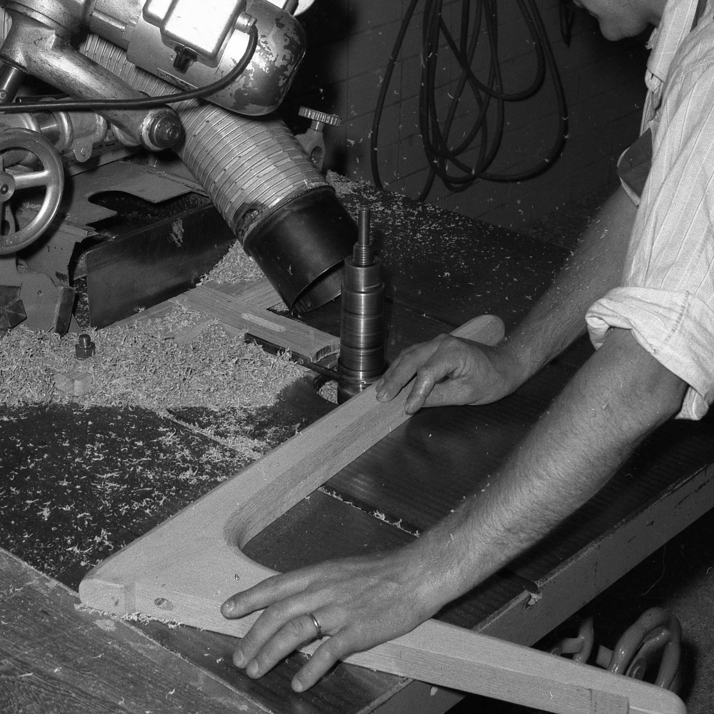

Get new perspectives on life
at home and design.
집에서의 생활과 디자인에 대한 새로운 시각을 얻으세요
'많은 사람들을 위한 더 좋은 생활을 만듭니다.' IKEA 비전은 홈퍼니싱에 국한되지 않습니다. IKEA는 세상에 바람직한 변화를 일으키는 기업이 되고자 합니다. 원자재 소재를 공급받는 지역사회를 변화시키는 것부터, 고객이 집에서 더 지속가능한 생활을 실천하도록 돕는 제품을 만드는 것에 이르기까지 그 방식은 다양합니다.
IKEA 비전이 우리가 존재하는 이유를 말해준다면, IKEA 경영철학은 우리가 성취해야 하는 것을 말해줍니다. 누구나 IKEA를 방문하면 IKEA의 경영철학을 쉽게 파악할 수 있을 거예요. ‘우수한 디자인과 기능의 다양한 홈퍼니싱 제품을 더 많은 사람들이 이용할 수 있도록 합리적인 가격으로 제공합니다’가 IKEA의 경영철학입니다
“IKEA 성장 이야기를 만나보세요”
잉바르의 우수한 학교 생활에 대한 보상으로 아버지는 잉바르에게 약간의 용돈을 주었고, 잉바르는 이 돈으로 회사를 설립했습니다. 1948년에는 가구를 판매하기 시작하며 현재 우리가 알고 있는 IKEA 제품군의 시작을 알렸죠.
IKEA 창업자 잉바르 캄프라드는 언제나 가능한 한 최선의 가격으로 제품을 제공하고자 했지만, 결코 품질을 포기하지는 않았습니다. 경쟁업체들이 가격을 낮추기 위해 품질을 속이기도 한다는 사실을 알고 있었지만, 이를 따라할 생각은 없었죠. 'ikéa-nytt' 브로셔 1948~1949년호에서 그는 IKEA가 가격을 그렇게 낮게 유지할 수 있었던 비결을 공개합니다. “IKEA의 낮은 가격은 현재 스웨덴 내 최저가이며, 이는 높은 매출, 공장 직배송, 매우 낮은 간접비 덕분에 가능합니다." 낮은 가격과 좋은 품질을 모두 갖춘 제품을 제공하겠다는 잉바르의 초창기 다짐은 오늘날에도 여전히 살아 숨쉬고 있으며, IKEA의 문화와 정체성을 이루는 초석이 되었습니다. 윗부분이 제거되어 조립을 기다리는 소나무 의자가 보이는 IKEA 플랫팩. 플랫팩 혁명의 시작 우편 주문을 통해 가구를 배송할 경우 발생하는 높은 비용과 손상율은 잉바르가 계속 안고 있던 고민이었습니다. 당시에도 플랫팩 가구가 존재하긴 했지만 스웨덴에서 널리 사용되지는 않았죠. 그러던 중 1953년에 IKEA가 플랫팩을 도입했습니다. 직접 조립하는 제품은 인기가 있었고, 비용이 많이 드는 운송 문제에 대한 해결책이 되었습니다.
우편 주문을 통해 가구를 배송할 경우 발생하는 높은 비용과 손상율은 잉바르가 계속 안고 있던 고민이었습니다. 당시에도 플랫팩 가구가 존재하긴 했지만 스웨덴에서 널리 사용되지는 않았죠. 그러던 중 1953년에 IKEA가 플랫팩을 도입했습니다. 직접 조립하는 제품은 인기가 있었고, 비용이 많이 드는 운송 문제에 대한 해결책이 되었습니다.

낮은 가격과 좋은 품질을 모두 갖춘 제품을 제공하겠다는 열망은 언제나 IKEA를 움직이는 원동력이었습니다. 그러나 IKEA가 제품을 개발할 때는 가격과 품질 외에도 기능, 디자인, 지속가능성이라는 세 가지 측면도 고려합니다. 다섯 가지 측면이 모두 균형을 이룰 때, 우리는 이를 데모크래틱 디자인이라고 부릅니다. 데모크래틱 디자인이라는 개념은 1995년 밀라노 가구 박람회에서 공식적으로 선보였으며, 이후 IKEA가 제품을 개발하고 평가하는 척도로 자리잡았습니다.

1960년 6월에 IKEA 매장에서는 커피와 비가열 조리 음식만 판매했습니다. 그러나 그해 연말에는 IKEA 레스토랑에 당시로서는 최신 가전이었던 전자레인지를 비롯한 주방 설비가 완비되었고, 햄버거와 같은 따뜻한 음식과 일품 요리를 제공하기 시작했습니다. 이러한 아이디어는 잉바르의 관찰에서 비롯되었습니다. 잉바르는 사람들이 점심을 먹기 위해 엘름훌트의 레스토랑이나 식당으로 가기 위해 매장을 떠난다는 사실을 발견했죠. 매장을 떠나면 자연스럽게 구매 과정 전체가 중단되었습니다. 잉바르는 배가 고픈 고객은 물건을 더 적게 산다는 사실을 깨달았어요. 많이들 이야기하는 것처럼, 배가 고픈 상태에서는 뭐든 제대로 할 수가 없으니까요.

IKEA의 I와 K는 IKEA의 창업주인 잉바르 캄프라드(Ingvar Kamprad)의 이니셜에서, E는 그가 유년 시절을 보낸 농장 엘름타뤼드(Elmtaryd)의 이름에서, A는 근처 마을인 아군나뤼드(Agunnaryd)에서 따온 것입니다.
이케아의 탄생
IKEA의 핵심가치는 우리가 중요하게 여기는 것을 반영합니다. 너무 중요하기 때문에 IKEA의 ‘변치 않는 부분’이라고 말하죠. IKEA 핵심가치는 우리가 사람과 지구를 대하는 방식부터 의사결정 방식에 이르기까지, 직장 내 일상 전반에서 나침반이 되어 줍니다.
스웨덴어로 함께하기를 뜻하는 ‘틸삼만스(Tillsammans)’는 IKEA에 정말 중요한 단어입니다. IKEA 문화의 중심에 자리하고 있죠. 서로 신뢰하고, 같은 방향으로 끌어주며, 즐겁게 어울려 일할 때 최선의 결과를 얻을 수 있다는 걸 우리는 알고 있습니다.
IKEA는 바람직한 변화를 만들어내는 힘이 되고자 합니다. IKEA에는 현재는 물론 미래 세대를 위해 커다란 변화를 이끌어내고 그러한 변화를 지속시켜 줄 잠재력이 있어요. IKEA는 앞으로도 더 지속가능한 방식으로 공급되고 제작된 제품을 제공하고 사람들이 보다 지속가능한 집에서의 생활을 누릴 수 있도록 도울 거예요.
IKEA는 내부에서 뿐만 아니라 외부 업체들도 품질 저하 없이 적은 자원으로 더 많은 것들을 만들어내도록 이끕니다. 그래서 IKEA는 매일, 어디서나 불필요한 비용을 발견하고 없애기 위해 최선을 다해요. 비용을 낮추지 않으면 절대로 낮은 가격을 제공할 수 없기 때문이죠.
간결함, 솔직함, 소탈함은 IKEA의 유산입니다. IKEA의 세상에서 간결함은 효율성과 자연스러운 일 처리를 의미합니다. IKEA에서 우리는 복잡한 솔루션에 대해 ‘아니요’라고 말하며, 권위주의를 가장 큰 적으로 여깁니다.
오늘 우리가 무엇을 하든 내일은 조금 더 나아질 수 있다고 믿습니다. IKEA에서 불가능이란 없죠. ‘불가능한’ 문제에 대한 해결책을 찾는 것이 우리를 성공으로 이끌었으니까요.
IKEA는 다른 기업과 다르며, 다른 기업을 모방하려 하지 않습니다. 관습에 도전하여 업계 내에서는 물론이고 때로는 전 세계적으로 긍정적인 변화를 이끌어내고자 해요. 우리는 호기심과 열정, 더 나은 세상을 만들려는 열망으로 쉼 없이 행동하는 사람들입니다.
우리는 IKEA 여정을 이제 막 시작한 사람들에게도 많은 책임을 부여하는 편이에요. 성장하고자 하는 이들이 가진 역량에 믿음을 갖고, 이들에게 더욱 힘을 실어 주려고 하기 때문이죠. 또한 더 크고 어려운 일에 도전하는 과정에서 각자 더욱 성장할 수 있다는 믿음 때문이기도 합니다.
IKEA에서 리더십이란 지위가 아니라 행동입니다. 역량과 경력만큼이나 사람의 가치를 중요하게 생각하죠. 우리는 말한 것을 실천하는 사람, 솔선수범하는 리더십을 갖춘 사람을 필요로 합니다.